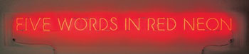
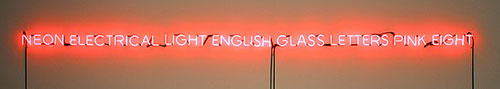
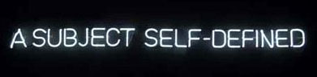
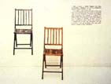
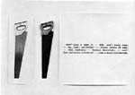
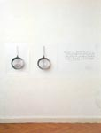

Philosophy as Art as Philosophy
Philosophy as Art as Philosophy  Tautology
Tautology  Concept
Art
Concept
Art  Radical Art
Radical Art
 Philosophy as Art as Philosophy
Philosophy as Art as Philosophy  Tautology
Tautology  Concept
Art
Concept
Art  Radical Art
Radical Art
Self-referential Neon
"Neon", 1965
"Five Words in Red Neon", 1965
"Neon Electrical Light English Glass Letters Pink Eight", 1966
"Wittgenstein's Color", 1989
"Four Colors Four Words", 1966
"A Subject Self-Defined" , 1967
Photo/Object/Lemma ("One and Three Things"), 1965

One and Three Chairs
[Photograph, chair, and entry for "chair" in etymological dictionary".]One and Three Chairs
[Photograph, chair, and entry for "chair" in English-to-French translation dictionary.]
One and Three Chairs
[Photograph, chair, and entry for "chair" in English-to-German translation dictionary.]

One and Three Saws
[Photograph, saw, and entry for "saw" in English-to-Italian translation dictionary.]

One and Three Pans
Footnote
The word cupboard and the cupboard as a concrete object exist in the system of the concrete world at the same level as other objects, stones and light sources. The word cupboard exists in the system of concepts at the same level as the words: person, infertility, density, transition, etc.
Daniil Charms: "Objects and Figures." (1927) [Quoted from p. 629 of the German translation by Peter Urban in: Boris Groys, Aage Hansen-Löve & Anne von der Heiden (eds.): Am Nullpunkt. Positionen der russischen Avantgarde. Frankfurt am Main: Suhrkamp Verlag, 2005, pp. 628-632.]
Descriptions
"Nine Paintings with Words as Art", 1966.
"Titled (Art as Idea as Idea)"
|
Painting [Dictionary definition.] 1966. |
To Paint [Eight-part entry from etymological dictionary.] 1966. |
Water [Dictionary translation: English-to-French.] 1966. |
|
Water [Dictionary definition.] 1966. |
Idea [Entry
from |
Nothing
[Dictionary translation: |
|
Nothing [Dictionary
translation: |
Meaning [Dictionary
translation: |
Silence [Dictionary
translation: |
|
Nothing [Dictionary
translation: |
Nothing [Dictionary definition.] 1967. |
Nothing [Dictionary
translation: |
|
Nothing [Dictionary
translation: |
Art [Dictionary definition.] 1967. |
Ultimate [Dictionary definition.] 1967. |
|